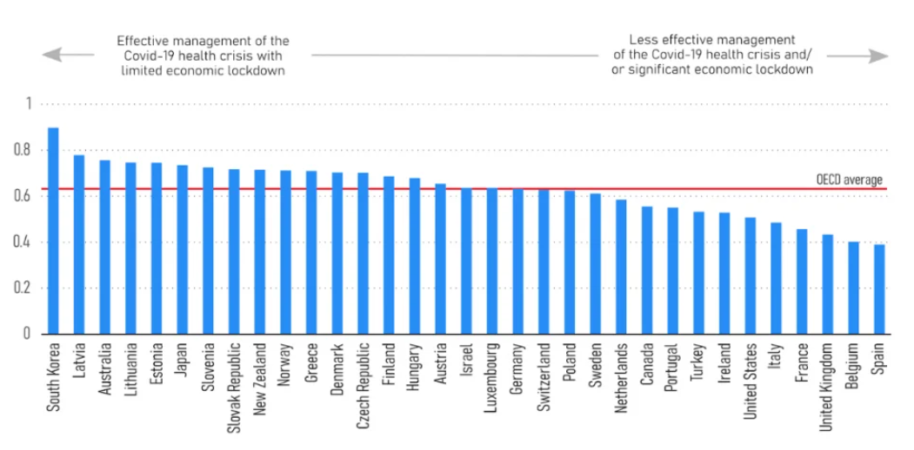

Documentation Page:
My design process was long and full of indecisiveness. My first route was to create a bar graph but with so many countries it wouldve been very hard to fit them. After going through many other graphs I decided on a Multi-line Chart to display the Covid Case to Death ratio. I sat down and thought long and hard on my "why", trying to narrow in my focus and figure out the best way to go about this. With so much data I kept finding it hard to include all the data within the site. So I chose to include 3 months for each of the years (2020, 2021, and 2022). I chose these months because they tend to be warmer months and with that more people are outside and out doing things. My design choices were pretty simple, I chose the color blue to represent cases of each country. Green was a thought but I didn't want to represent getting Covid with a color that is typically used for representing something good. The red obviously represents the deaths that occured due to Covid.
The main focus for this was this, why were the cases to death rate so low but the
fear of it was so high? So I began looking over the data and doing research, not focusing on all the countries since there are so many but rather just a select few. I aimed my focus on the effectiveness of their response to the pandemic; then basing that off mortality rates, effective reproduction rates, and reduced mobility rates during the initial 2020 spring of Covid. At the bottom of the page is a graph to represent where I found these numbers and which countries I put the most focus towards. Along side that is the data set made with to display each of the countries and their statistics. It was very interesting to see how places like Candada had over 1,800,000,000 cases and only about 25,000,000 deaths. Even though Canada was shown to have a lower effectiveness in response to Covid and yet they had a 1.3% death rate. Spain was considered the very lowest on the chart and they held a 1.3% death rate. On the other side of things South korea, the #1 rated in effectiveness for their response to Covid, had a 0.13% death rate. So why are we in a constant state of fear? A study from Brown was published showing that when this virus hit, depression rates tripled and the affect of it worsened. The rate was at 8.5% in adults pre-covid and within the first year it elevated to 32.8% with intensified symtpoms. That increase really is truly crazy to see.
In conclusion, going over this data helped me understand the damage Covid really did. The tragic deaths can not be forgotten, but even worse the reprecutions are more then those two simple statistics. To completely understand these reprecutions we must understand how it effected a person more then the symtpoms you find on google. The unemployment rate, which leads to a higher homeless rate, broken families. Its a downward spiral that shook the world and divided the masses more then ever. The information I went over and collected showed that to comprehend why the fear is so high you have to go into the rabbit hole.



My design process was long and full of indecisiveness. My first route was to create a bar graph but with so many countries it wouldve been very hard to fit them. After going through many other graphs I decided on a Multi-line Chart to display the Covid Case to Death ratio. I sat down and thought long and hard on my "why", trying to narrow in my focus and figure out the best way to go about this. With so much data I kept finding it hard to include all the data within the site. So I chose to include 3 months for each of the years (2020, 2021, and 2022). I chose these months because they tend to be warmer months and with that more people are outside and out doing things. My design choices were pretty simple, I chose the color blue to represent cases of each country. Green was a thought but I didn't want to represent getting Covid with a color that is typically used for representing something good. The red obviously represents the deaths that occured due to Covid.
The main focus for this was this, why were the cases to death rate so low but the fear of it was so high? So I began looking over the data and doing research, not focusing on all the countries since there are so many but rather just a select few. I aimed my focus on the effectiveness of their response to the pandemic; then basing that off mortality rates, effective reproduction rates, and reduced mobility rates during the initial 2020 spring of Covid. At the bottom of the page is a graph to represent where I found these numbers and which countries I put the most focus towards. Along side that is the data set made with to display each of the countries and their statistics. It was very interesting to see how places like Candada had over 1,800,000,000 cases and only about 25,000,000 deaths. Even though Canada was shown to have a lower effectiveness in response to Covid and yet they had a 1.3% death rate. Spain was considered the very lowest on the chart and they held a 1.3% death rate. On the other side of things South korea, the #1 rated in effectiveness for their response to Covid, had a 0.13% death rate. So why are we in a constant state of fear? A study from Brown was published showing that when this virus hit, depression rates tripled and the affect of it worsened. The rate was at 8.5% in adults pre-covid and within the first year it elevated to 32.8% with intensified symtpoms. That increase really is truly crazy to see.
In conclusion, going over this data helped me understand the damage Covid really did. The tragic deaths can not be forgotten, but even worse the reprecutions are more then those two simple statistics. To completely understand these reprecutions we must understand how it effected a person more then the symtpoms you find on google. The unemployment rate, which leads to a higher homeless rate, broken families. Its a downward spiral that shook the world and divided the masses more then ever. The information I went over and collected showed that to comprehend why the fear is so high you have to go into the rabbit hole.